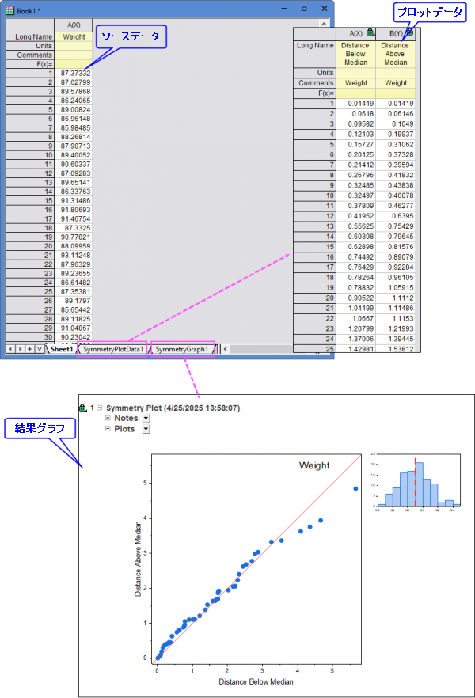

少なくとも1つの列を選択して対称性プロットを作成します。
データを選択します。
メニューから作図> 統計：対称性プロットを選択します。
Symmetry.OTPU(Originのプログラムフォルダにインストールされています)
対称性プロットは、応答データが中央値を基準に対称に分布しているかどうかを判定するために使用されます。 プロット作成時、Originは以下の処理を実行します。
結果として、2つの結果シート（プロット用データと結果グラフ）が作成されます。

複数の応答列を選択して対称性プロットを作成しようとすると、plot_symmetry ダイアログが表示されます。このダイアログでは、グラフ内のレイヤを分離またはグラフを分離から配置方法を指定できます。